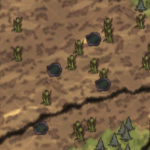
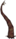
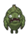
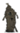
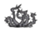

| Marsh | |
|  |
|
| Abundant |     |
| Occasional | |
| “ | It's dripping all over. | ” |
| –Maxwell | ||
The Marsh (commonly referred as Swamp) is one of the Biomes in the game and the place where Marsh Turfs are abundant.
Marsh is considered the most dangerous of all Biomes for its native Tentacles, which attack without provocation, and Merms that, even though only turn hostile if being near, conform a danger if camping in, or even near, marsh areas.Spider Nests appear frequently in the Marsh, which normally leads to confrontation with other mobs. As a result, players can take away lots of loot after their wars end. </span>
It is recommended to keep moving and staying on roads to avoid being attacked by the marsh's hostile inhabitants. Tentacles also cannot spawn on roads. A player can find Reeds randomly scattered across the area, which can also rarely spawn outside of the Marsh/Swamp biome.
Marshes are also the only locations to find Tentacles, Spiky Trees, Spiky Bushes, and Rundown Houses.
This type of swamp is found in Caves. It includes all the things a normal swamp has except for Rundown Houses, Ponds, and Spiky Trees. A cave can generate two types of cave swamps, both of which have different diversities.
The first one is rich in Reeds and a player can harvest at an average of fifty Cut Reeds in the whole area. However, this biome is also infested with Tentacles and at least five tier-three Spider Dens. Therefore, players should take extreme caution when venturing this area.
The second one is less dangerous than the first one. This biome is abundant with Light Flowers and is inhabited by a Tentapillar. Sometimes, Tentacles can also be found in this area, but not as much as the first one.
| Biomes | |
| Surface | Chess • Grasslands • Graveyard • Forest • Marsh • Mosaic • Ocean • Rockyland • Savanna • Desert • Deciduous Forest |
| Caves | Mushtree Forest • Rocky Plains • Stalagmite Biomes • Sunken Forest • Cave Swamps |
| Ruins | Abyss • Labyrinth • Military • Sacred • Village • Wilds |
| Related | Bridges • Map • Road (Trail) • Turfs |
{kind=link}
{kind=link}
{kind=link}
{kind=link}
{kind=link}